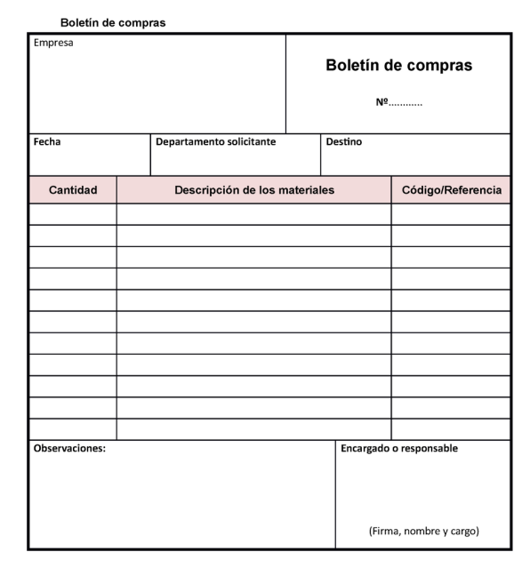
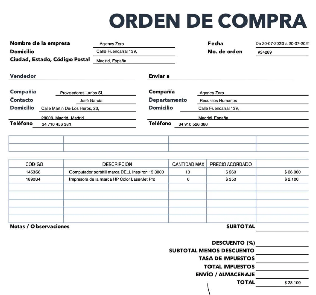

UT02 - Anàlisi de circuits amb portes llògiques. ================================================ 1. Algebra de Boole ------------------- L’àlgebra de Boole es fonamenta en els aspectes següents: - Un conjunt d’elements que només poden adoptar dos valors possibles, designats com 0 i 1. - Tres operacions principals: la suma lògica, el producte lògic i la negació. Cada element de l’àlgebra de Boole es representa mitjançant una lletra, anomenada variable booleana o variable binària. Cada una d’aquestes variables pot prendre un dels dos valors possibles: 0 o 1. Aquesta branca de les matemàtiques resulta especialment útil per al tractament de sistemes en què només hi ha dos estats diferenciats, com passa amb els sistemes digitals. ### 1.1. Exemple Què representen els valors 1 i 0? Això depèn de cada aplicació concreta; l’únic que importa és que serveixen per identificar dos estats perfectament diferenciats. Vegem-ho amb un altre exemple: molts habitatges moderns disposen d’un sistema d’alarma que detecta si les finestres estan obertes o tancades. Com que cada finestra només pot trobar-se en dos estats possibles (oberta o tancada), podem “traduir” aquesta informació al llenguatge de l’àlgebra de Boole d’una manera molt senzilla. Podríem assignar una variable binària a cada finestra: - a: estat de la finestra del menjador - b: estat de la finestra de la cuina - c: estat de la finestra del dormitori principal - d: estat de la finestra del dormitori secundari Associarem el valor 1 a la finestra oberta i el valor 0 a la finestra tancada. Aquesta assignació és totalment arbitrària; es podria fer a la inversa sense problema. Així, si ens donessin la següent informació: UT02 - Anàlisi de circuits amb portes llògiques. ================================================ 1. Algebra de Boole ------------------- L’àlgebra de Boole es fonamenta en els aspectes següents: - Un conjunt d’elements que només poden adoptar dos valors possibles, designats com 0 i 1. - Tres operacions principals: la suma lògica, el producte lògic i la negació. Cada element de l’àlgebra de Boole es representa mitjançant una lletra, anomenada variable booleana o variable binària. Cada una d’aquestes variables pot prendre un dels dos valors possibles: 0 o 1. Aquesta branca de les matemàtiques resulta especialment útil per al tractament de sistemes en què només hi ha dos estats diferenciats, com passa amb els sistemes digitals. ### 1.1. Exemple Què representen els valors 1 i 0? Això depèn de cada aplicació concreta; l’únic que importa és que serveixen per identificar dos estats perfectament diferenciats. Vegem-ho amb un altre exemple: molts habitatges moderns disposen d’un sistema d’alarma que detecta si les finestres estan obertes o tancades. Com queOrganització del procés d'aprovisionament ========================================= Índex ----- + Aprovisionament d'instal·lacions elèctriques. + Mètodes. + Processos d'aprovisionament. + Tècniques de planificació de l'aprovisionament. + Gestió de l'aprovisionament. Gestió del control. + Representació gràfica. + Diagrames de flux. + Detecció de necessitats en l'aprovisionament d'equips i elements. + Aplicació del pla de muntatge a l'organització de l'aprovisionament. + Fulles de control. + Albarans. + Planificació de l'aprovisionament. + Programari específic de control i planificació de l'aprovisionament. Aprovisionament d'instal·lacions elèctriques. --------------------------------------------- L'aprovisionament realitza les següents funcions: + Gestió de compres - Selecció de proveïdors - Negociació de preus i termes de compra + Emmagatzematge dels materials + Manteniment de l'_stock_ en les condicions necessàries Els seus objectius són: + Minimitzar el cost + Contribuir als objectius. Analogia AOEII + Millorar la qualitat dels productes i serveis de l'empresa + Filtrar proveïdors. Es busca fiabilitat (terminis) i competència (material adient) + Reduir despeses d'_stockatje_ i risc de ruptura d'_stock_. Gestió de l'aprovisionament --------------------------- La gestió de l'aprovisionament és un procés cíclic, amb les següents fases: + Anàlisi de les necessitats + Selecció de proveïdors + Emissió i gestió de comandes + Recepció i verificació + Aprovació i pagament de factures + Control de resultats + Anàlisi de les necessitats + ... ### Anàlisi de les necessitats. Les necessitat venen determinades o bé per el departament de producció o bé tècniques estadístiques. En el primer cas apareixerà una petició quan es detecti la necessitat. Com l'adjudicació d'un projecte, inici d'un treball o nova fase d'un treball ja començat. El segon cas es basa en l'experiència de l'empresa i permet anticipar-se i per tant donar uns temps de resposta molt més ràpids, tot i que no es pot fer sempre i té un cert risc ja que intenta estimar alguna cosa que encara no és una realitat. Algunes de les tècniques que es poden utilitzar són: - Mitjanes mòbils (per exemple la IA14 del COVID era una mitjana mòbil), elimina els dents de serra i les fluctuacions diàries. - Mètode del mínims quadrats: Donat un núvol de punts corresponent a les dades es busca una corba que passi tan a prop com sigui possible dels punts de les dades. A partir d'una certa mida de l'empresa, les compres és burocratitzen. Es crea un document per sol·licitar un article o servei que és el butlletí de compres: «Document no obligatori, de règim interior, utilitzat amb assiduïtat pels usuaris de qualsevol dels departaments de l'empresa, i enviat al departament de compres. S'hi detallen els materials que és necessari adquirir, així com les seves característiques, i terminis de lliurament, perquè aquest departament iniciï els tràmits oportuns per a la seva adquisició. Serà una tasca d'aquest departament agrupar els butlletins per matèries, proveïdors, distribuïdors, segons el sistema de codificació seleccionat, i emetre les ofertes oportunes.» (Ministerio de educación, ITE, glosario técnico multimédia<sup>[1]</sup>) <p align="center"><p></p></p> ### Selecció de proveïdors Es seleccionaran els proveïdors segons els següents criteris: - Termini d'entrega - Qualitat - Quantitat (pot fer front a una comanda gran, o per altra banda només a comandes grans i en necessito una petita). - Servei (assistència tècnica, post-venda) - Preu - Estabilitat financera (una empresa en risc ens pot ocasionar pèrdues de pagaments a comte i endarreriments). - Socis de negocis (aliances) - Localització - Formació - Ètica - Transport Hi ha varis models de selecció: - Model de lleialtat al subministrador (Wind) - Model de Howard-Sheth - Model de Lehman y O'Shaughnessy Per a més informació es pot descarregar el capítol [Búsqueda, selección y evaluación de proveedores](https://www.mheducation.es/bcv/guide/capitulo/8448184068.pdf)<sup>[2]</sup> ### Emissió i gestió de comandes Una vegada es té una petició, ens dirigim als proveïdors seleccionats i demanem varies ofertes. A més si és possible, s'han de demanar ofertes a nous proveïdors. Amb aquests dos procediments s'aconseguirà: - Avaluar la situació del mercat - Conèixer nous proveïdors (maldament no es vulguin utilitzar). - Fomentar la competència - Anàlisis comparatiu del producte A part d'això a la negociació també influirà: - La mida de l'empresa (com més gran, més força). - La fama de solvència. - Temps (com més temps tinguem millor). - Informació en general. Quan rebem diferents ofertes cada una inclou descomptes, costos de transport o d'embalatge. Per a conèixer el preu unitari s'utilitza un prorrateig: <p align="center"><img src="https://latex.codecogs.com/svg.latex?k={C_{tf}\over%20I_{bf}}"></p> A on: - k és la constant de proporcionalitat - C<sub>tf</sub> és el cost total de la factura - I<sub>bf</sub> és l'import brut a pagar Llavors el preu unitari es calcula com a: <p align="center"><img src="https://latex.codecogs.com/svg.latex?C_u=k\cdot%20P_p"></p> A on: - P<sub>p</sub> és el preu del producte. Una vegada s'hagui optat per una oferta o una altra es crearà una ordre de compra, que tindrà un número únic (normalment correlatiu), i el proveïdor haurà d'enviar una còpia signada. Hi ha tres tipus de comanda: - Normal - Programada - Oberta A l'ordre de compra hi apareixen: - Dades del comprador - Número d'ordre - Data (d'emissió del document) - Dades del venedor - Relació d'articles - Condicions comercials (que han de ser signades). <p align="center"><p></p></p> ### Recepció i verificació Feta la comanda quan ja estigui disponible es procedeix a l'entrega. Aquesta pot ser a l'empresa del proveïdor o en obra. Abans de procedir a la descàrrega o càrrega s'ha de comprovar que l'albarà coincideix amb la comanda. Mentre es fa la descàrrega o just després s'han de comprovar, errors o defectes a la mercaderia. Per tal d'aconseguir-ho, **s'han de comptar els paquets. Si hi ha desperfectes s'anota el defecte a l'albarà o s'accepta amb l'anotació "excepte posterior examen"** Si l'article és suficientment valuós i el transport és a càrrec de l'empresa que el proveïdor aporti algú que també examinarà la mercaderia. L'examen tractarà de comprovar quantitats, models, mides, colors, referencies i el seu resultat «conforme» o «no conforme». I es procedirà a acceptar, o no la mercaderia. Fet el control, es crea una fulla de recepció i s'envia al departament de compres, per a reclamar articles que faltin, siguin erronis o defectuosos. Els articles acceptats passen al magatzem (per tant s'haurà d'actualitzar l'inventari) o a la zona d'apilament. ### Aprovació i formes de pagament Recepcionada la mercaderia, el departament de compres haurà de disposar de: - Albarà d'entrega - Ordre de compra signada - Factura del proveïdor El responsable comprovarà la coincidència dels documents i procedirà al seu pagament. El pagament s'efectuarà tal com s'hagi pactat amb el proveïdor, com pot ser: - Efectiu (quantitat petites) - Targeta bancaria (dèbit o crèdit) - Xec - Pagament ajornat (pagares, o lletres de canvi) Els pagarés es poden liquidar abans del termini mitjançant una entitat bancària, la qual aplicarà un descompte. ### Control de resultats Acabada l'operació d'aprovisionament, es procedirà a avaluar si els resultats han estat els desitjats. Per a fer-ho es solen utilitzar KPI (_Key Performance Indicators_) indicador clau de resultat: - **Relació entre compres i vendes:** Quin percentatge del cost del producte es deu a les matèries primes o materials . En empreses elèctriques ronda el 25% - **PMP (període mitjà de pagament):** Quan de temps triguem a pagar als proveïdors. <p align="center"><img src="https://latex.codecogs.com/svg.latex?\text{PMP}=\frac{\text{Deute\;prove\"{i}dors}}{\text{Compres\;anuals\;a\;cr\`edit}}\cdot365"></p> - **Índex de rotació:** indica el número de vegades que es renova l'estoc <p align="center"><img src="https://latex.codecogs.com/svg.latex?\textup{Rotaci\'{o}\;d'stock}=\frac{\text{Materials\;consumits}}{\text{estoc\;mitj\`{a}}"></p> - **Mitjana de maduració:** és el temps entre l'adquisició dels materials i el cobrament de la instal·lació. - **Cost total d'adquisició:** és la suma de tots els costs d'un material (gestió de residus, transport, etc.) - **Cost de compres:** és una manera del cost proporcional del departament de compres. <p align="center"><img src="https://latex.codecogs.com/svg.latex?\text{Cost\;de\;compres}=\frac{\text{Cost\;departament\;de\;compres}}{\text{Volum\;anual\;de\;compres}"></p> - **Ràtio de proveïdors i clientes:** Proporció entre el número de proveïdors i número de clients. - **Índex de devolucions:** Proporció entre el valor de productes tornats i el valor de les compres. - **Índex d'enderrariments:** És la proporció entre el valor de les comandes endarrerides i el valor de les compres. - **Índex d'espera mitjà:** proporció entre el valor de les comandes pendents i el volum anual de compres. Aprovisionament a instal·lacions electrotècniques ------------------------------------------------- - **Depèn del tipus d'activitat:** No és el mateix una empresa quadrista que una de manteniment. - **Tipus de materials:** Una empresa de manteniment tindrà un estoc més reduït, una d'enllumenat públic rebrà gran part del material a obra. - **Volum d'empresa:** Com més gran és una empresa més poder negociador té. En quan a la documentació es tindrà en compte: - PPT - Pressupost i medicions - Cronograma ### Plec de prescripcions tècniques / Plec de condicions Descriu de manera exhaustiva i vinculant els materials i les seves condicions tècniques. No sol contenir models, ni marques, i si els inclou no sol ser vinculant. ### Pressupost Descriu la partida (o Unitat d'obra), amb suficient nivell de detall i a més inclou les quantitats necessàries de tots els materials. S'han de tenir en compte que hi hagi un marge de seguretat per poder cobrir mercaderia amb defectes, avaries, modificacions lleus del projecte. ### Cronograma Es recorrerà al cronograma per saber els marges que tenim, per a que ens arribi la mercaderia a temps. D'aquesta manera a més de preveure les entregues de material per no tenir temps morts, es sabrà si compensa el cost d'emmagatzematge els ràpels de venta, Referencies ----------- \[1\] <http://ares.cnice.mec.es/gtm/web/index_ca_resultado_final.php?num=225402|&Buscar=Butllet%C3%AD%20de%20compres|&volver=butlleti%20de%20compres&cual=0> \[2\] <https://www.mheducation.es/bcv/guide/capitulo/8448184068.pdf>